Menu: Administração · Situação do manual: Em ajuste · Fonte dos prints: versão nova.
Para que serve
É a caixa de entrada de avisos de cada pessoa. Quando o sistema dispara um evento configurado (por exemplo, um perfil alterado), cada destinatário recebe um aviso, que aparece nesta lista e no número do sino do cabeçalho. A pessoa abre o aviso, lê a mensagem, vê o registro de acessos (Log da Notificação) e pode responder.
Antes de começar (o que precisa existir)
| O que precisa existir | Para quê | Onde se cadastra |
|---|---|---|
| Ser destinatário de um aviso (por usuário, perfil ou função) | Para o aviso aparecer na sua lista | Administração › Notificações padrão e Configurar notificação |
| Tipo de evento configurado | Sem configuração o aviso não é criado (do legado; a confirmar na versão nova) | Administração › Configurar notificação |
| Acesso à tela no perfil | Para abrir a lista | Administração › Perfil |
Passo a passo
- Abra Notificações do sistema. O filtro Pendente leitura já vem em SIM, mas a grade não aparece ao abrir (nem a linha "Nenhuma notificação encontrada."): a lista só surge depois de clicar em PESQUISAR.
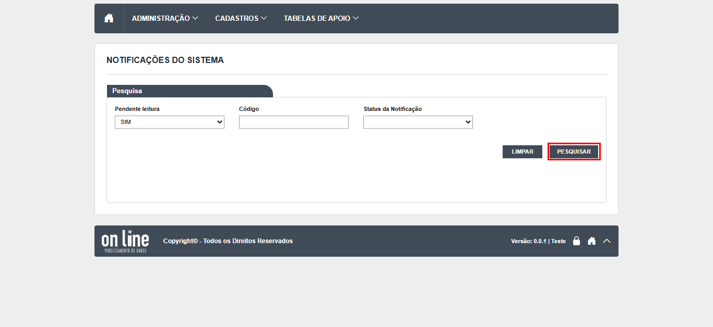
- Clique em PESQUISAR. A grade traz Código, Data da notificação, Data da sua leitura, Tipo notificação e Status notificação, com o ícone Visualizar em cada linha e a paginação (10 avisos por página, Anterior e Próxima). Se não houver avisos, aparece "Nenhuma notificação encontrada."
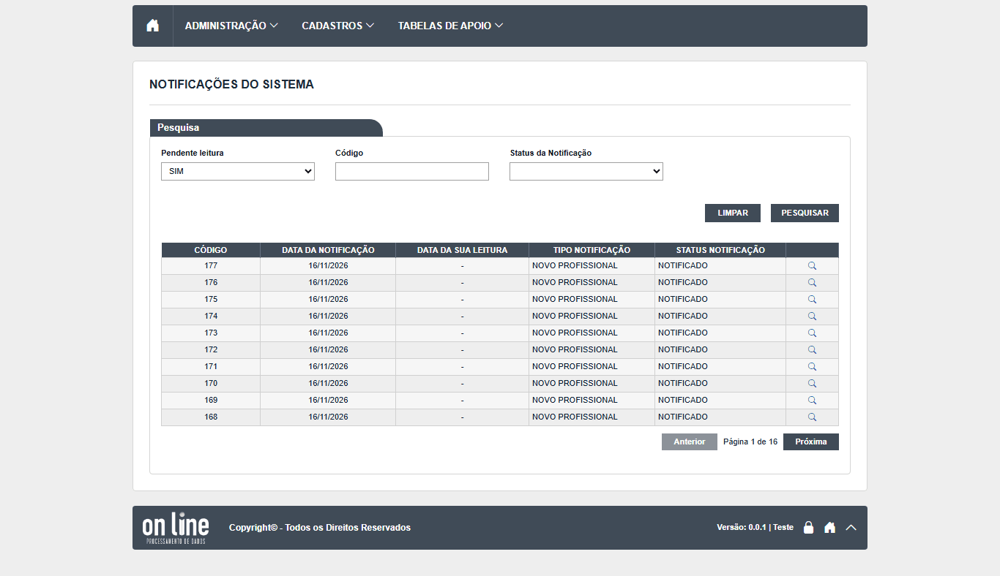
- Use os filtros: Pendente leitura (SIM, NÃO ou TODOS), Código (só números; letras não são aceitas) e Status da Notificação. No teste de 17/11/2026, com a conta de administrador de teste, SIM trouxe 157 avisos, NÃO trouxe 20 e TODOS trouxe 177 (a soma fecha; os números dependem dos dados). O sino do cabeçalho mostra "99+", porque não passa de 99: não dá para conferi-lo com a lista (Ponto para validar com a área se o limite é proposital).
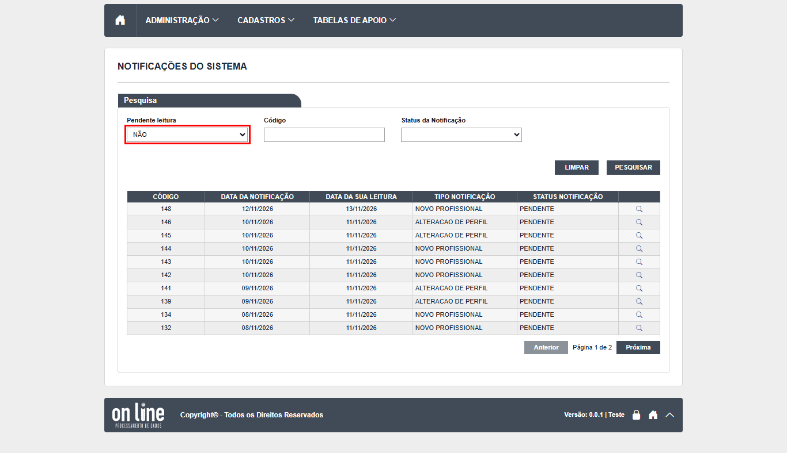
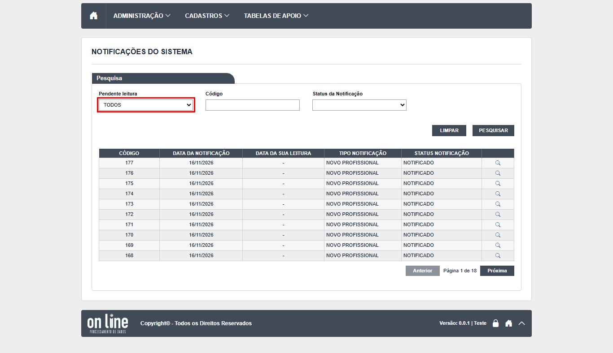
Um código que não existe (por exemplo 999999) mostra a lista vazia com a mensagem:
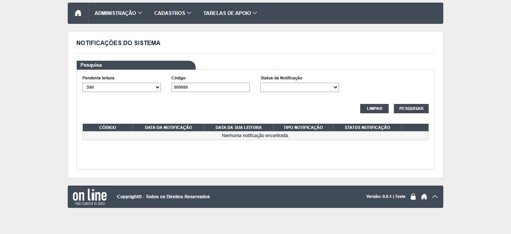
- Na linha do aviso, clique em Visualizar (único ícone da linha). Abre o detalhe com Código, Tipo de Notificação, Data da Notificação, Data de Conclusão, Título da Notificação, Status e Mensagem, mais o Log da Notificação (colunas Data, Usuário e Ação, com as linhas CRIADO e ACESSO). Ao abrir, o aviso sai do filtro "Pendente leitura", mas o status continua PENDENTE até a resposta.
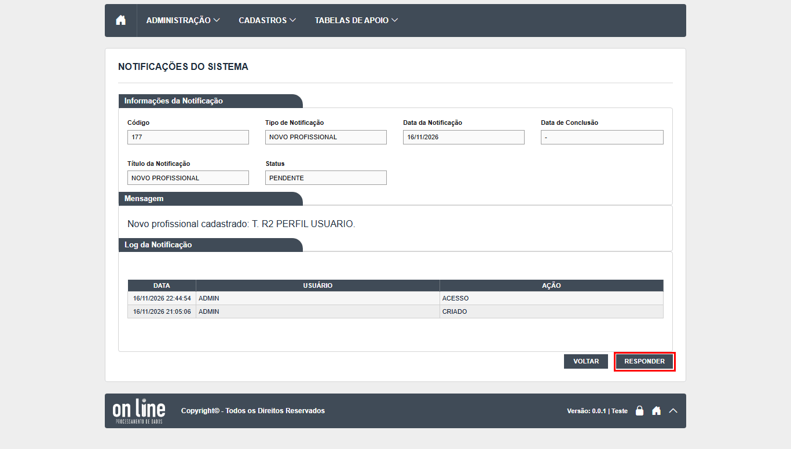
- Para responder, clique em RESPONDER. A tela pergunta "Deseja responder a notificação?" (SIM, NÃO). Não pede texto.
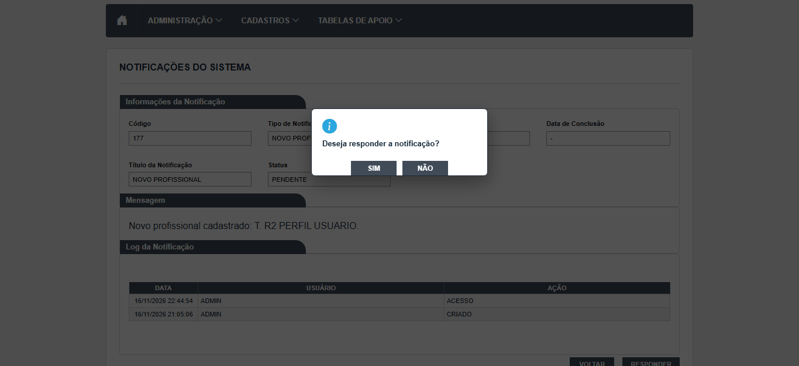
- Ao confirmar, aparece a janela "Registro salvo com sucesso!" com o botão OK; o OK leva à lista, onde o aviso fica com a data da leitura preenchida e o status RESPONDIDO.
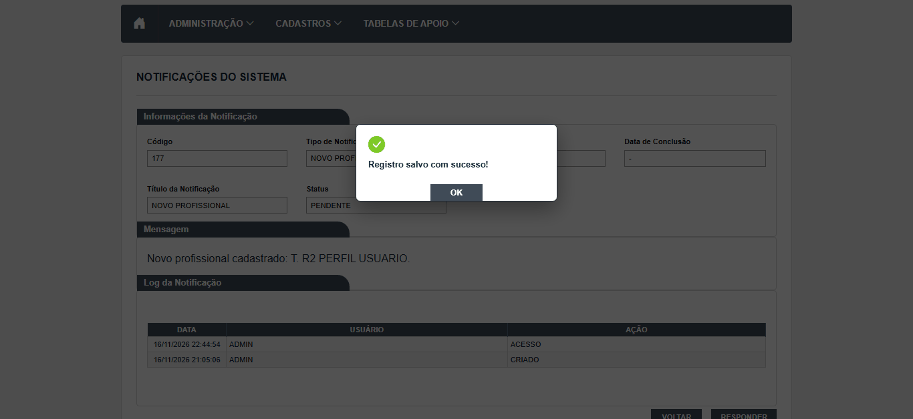
- Reabrindo o aviso respondido, o botão RESPONDER dá lugar a FINALIZAR e o log ganha a linha RESPONDIDO.
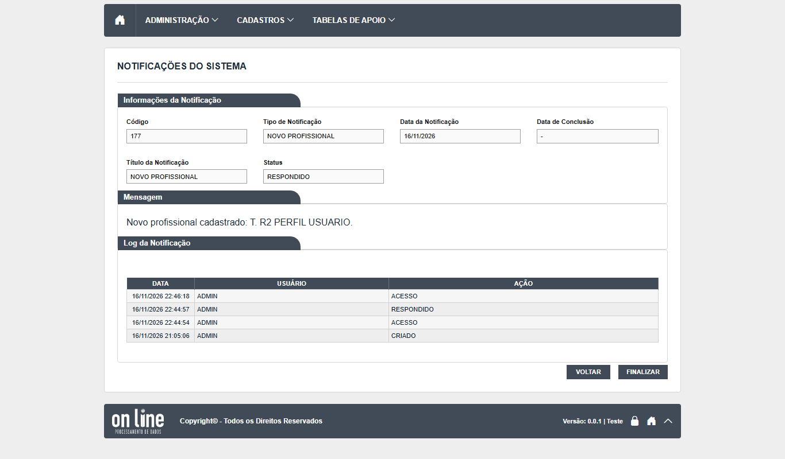
- Para encerrar o aviso, clique em FINALIZAR. A tela pergunta "Deseja finalizar a notificação?" (SIM, NÃO). Ao confirmar, aparece "Registro salvo com sucesso!" e o status passa a FINALIZADO.
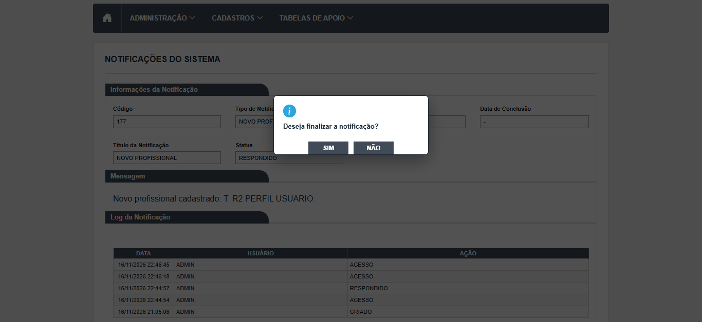
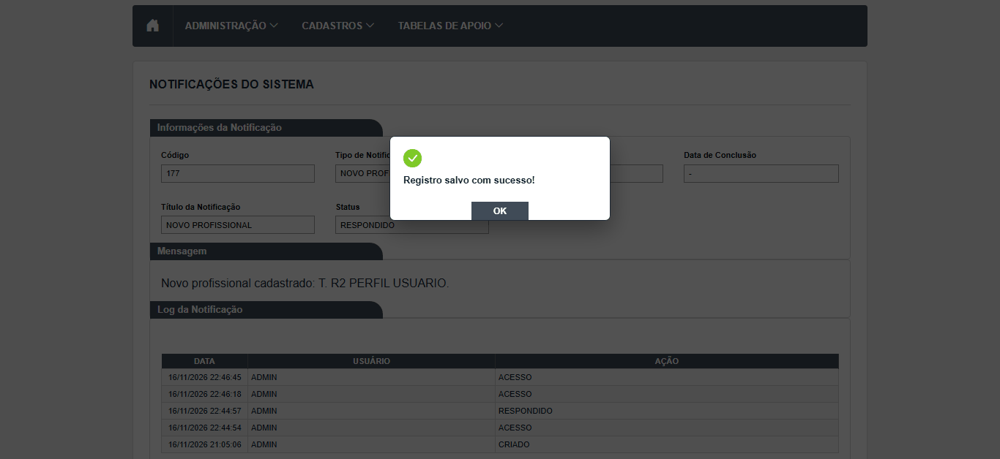
- VOLTAR retorna à lista. O item aparece no menu Administração:
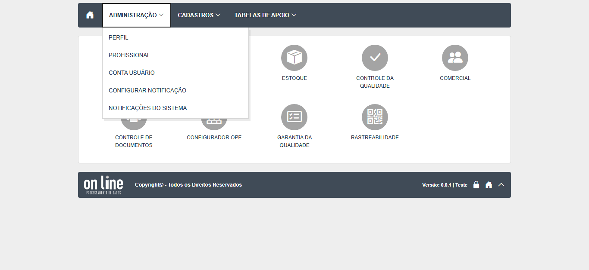
Ícones e botões da lista
| Ícone ou botão | O que faz | Quando aparece |
|---|---|---|
| PESQUISAR | Lista os avisos pelos filtros | Sempre |
| LIMPAR | Apaga os filtros | Sempre |
| Visualizar | Abre o aviso e o marca como lido | Em cada linha |
| Anterior / Próxima | Paginação de 10 em 10 | Quando há mais de 10 avisos |
| Excel, Imprimir, Incluir, Log | Não existem nesta tela | n/a |
Botões e ações
| Botão | O que faz |
|---|---|
| PESQUISAR / LIMPAR | Filtra / apaga os filtros |
| Visualizar | Abre o detalhe do aviso |
| RESPONDER | Pergunta "Deseja responder a notificação?" e, com SIM, grava a resposta (RESPONDIDO) |
| VOLTAR | Volta à lista |
| FINALIZAR | Aparece no detalhe depois de responder (no lugar de RESPONDER); pergunta "Deseja finalizar a notificação?" e, com SIM, grava e muda o status para FINALIZADO |
Mensagens do sistema
| Mensagem | Quando aparece |
|---|---|
| Nenhuma notificação encontrada. | Filtro sem resultado (visto na lista e com o código 999999) |
| Deseja responder a notificação? (SIM, NÃO) | Ao clicar RESPONDER |
| Registro salvo com sucesso! (janela com OK; o OK volta à lista) | Depois de responder e depois de finalizar |
| Deseja finalizar a notificação? (SIM, NÃO) | Ao clicar FINALIZAR |